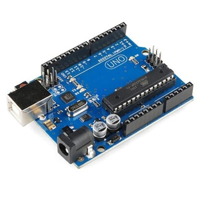
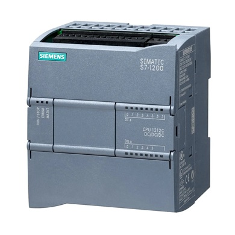
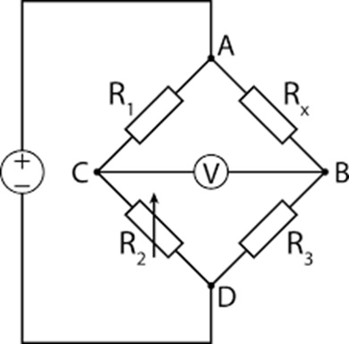
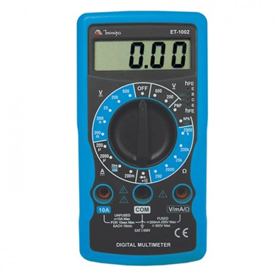

O arduíno é uma plataforma de prototipagem que serve para se criar projetos interativos, consiste em uma placa com um microcontrolador, pinos de saída e entrada e um usb para conectar ao computador, como software ele utiliza o Arduino IDE.

No arduíno essas entradas servem para ler sinais, a entrada digital tendo apenas dois estados, sendo eles o HIGH e LOW mostrando que só consegue diferenciar entre 0 ou 5 volts, já a analógica consegue ler vários valores contínuo, mede uma tensão em faixa especifica e faz com que o arduíno consiga processar, sendo de 0 a 1023 no arduíno.
Já no CLP, que é o controlador lógico programável um equipamento eletrônico muito utilizado na automação industrial para controlar máquinas e processos, as suas entradas são os sinais que o equipamento recebe de sensores e dispositivos de campo, sendo digital e analógica funcionando assim como no Arduíno.

O PWM significa Pulse Width Modulation e a sua saída um sinal digital que liga e desliga muito rápido, O que varia é o tempo que fica ligado. Já no CLP, sua saída analógica é sinal contínuo que o controlador envia para dispositivos de campo, representando um valor variável.
A ponte de wheatsone é um circuito elétrico muito utilizado para se medir resistência com uma alta precisão, é chamada de "ponte" pois consiste em 4 resistores em um forma de ponte, sendo assim uma tensão aplicada numa ponta para que na outra se possa medir a diferença entre os dois pontos, sendo muito utilizada com sensores que varias a resistência.

O múltimetro é um instrumento utilizado para medir grandezas elétricas, sendo assim principalmente a tensão, corrente elétrica e resistência.
O múltimetro é capaz também de fazer medida de continuidade, que é utilizado para verificar se há uma corrente elétrica gerando uma pequena tensão em uma ponta para receber na outra.

A dimerização é o processo químico em que duas moléculas iguais se ligam para formar uma molécula maior chamada dímero, este dímero podendo ser reversível ou irreversível e muitas vezes envolvendo ligações covalentes ou interações fracas, como por exemplo o hidrogênio